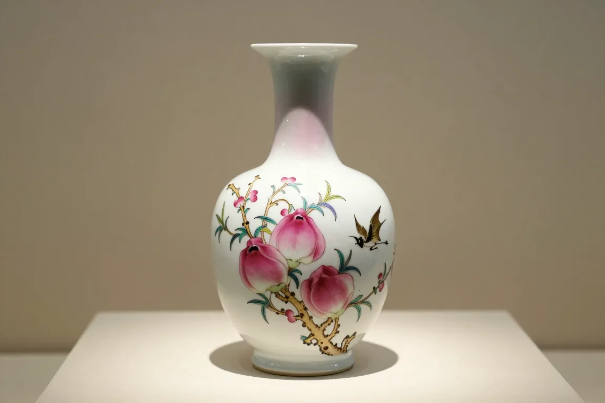

ceramics · 1720–1800 · also: Fencai, Yangcai, Rose family porcelain
Qing porcelain painted in opaque enamels over a fired glaze. A pink made from gold gives the style its name. The imperial kilns of Jingdezhen made the finest vases and bowls.

Core thesis
A white porcelain glaze takes opaque enamel like a canvas, and a pink from gold lets the painter model soft flesh, petals and clouds.
Design principles
Fire the white porcelain and its clear glaze first, at about 1300 °C, and paint only on the finished surface.
Mix the pink enamel with colloidal gold, in a ratio of about 1 part gold salt to 1000 parts glass.
Lay a white enamel under each pink, so that the pink reads in graded tints from deep rose to white.
Outline each shape in fine black or iron red, 0.3 to 0.5 mm wide, before the fill.
Cover the whole wall with one scene: flowering branches, birds, peaches and bats, or figures in a garden.
Fire the enamels again at 750 to 800 °C in a small muffle kiln, one colour group at a time.
Add gilt lines at the neck, the foot and the handles; keep the gold to 10 per cent of the surface.
Keep the inside and the base of an imperial piece white, or turquoise, with a six-character reign mark.
Anti-patterns
Flat blue-and-white painting under the glaze, with no enamel